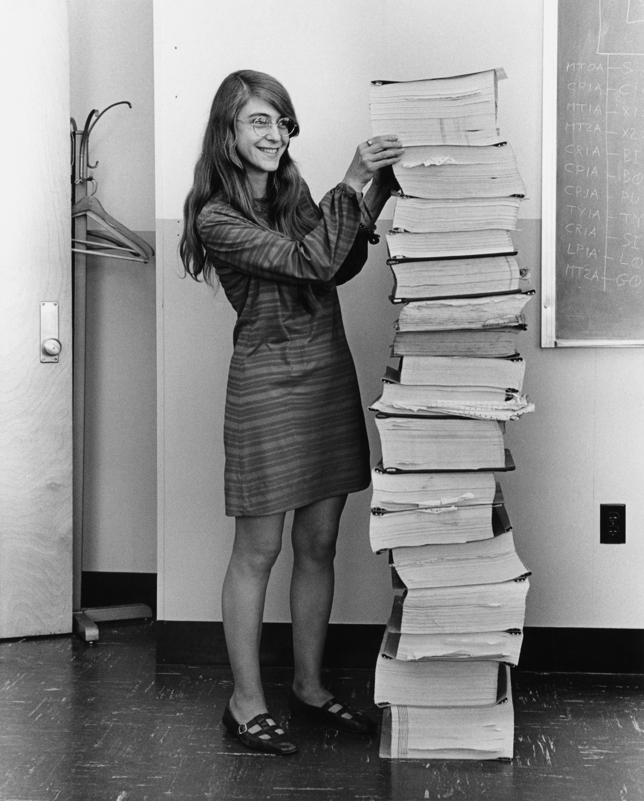
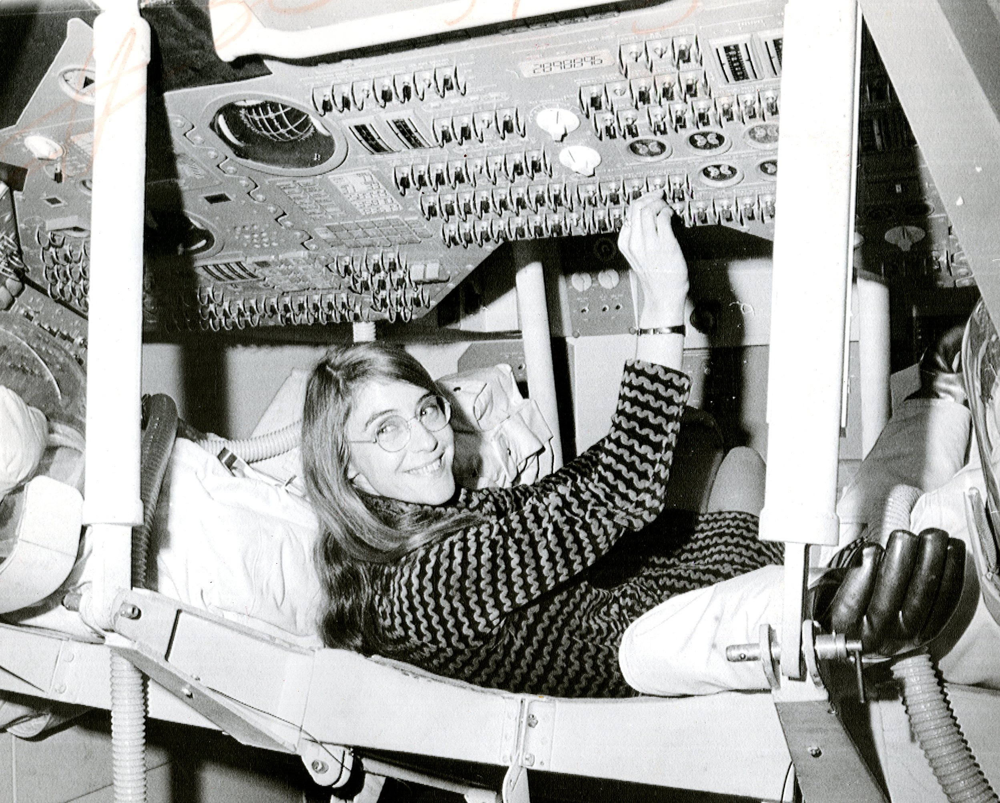
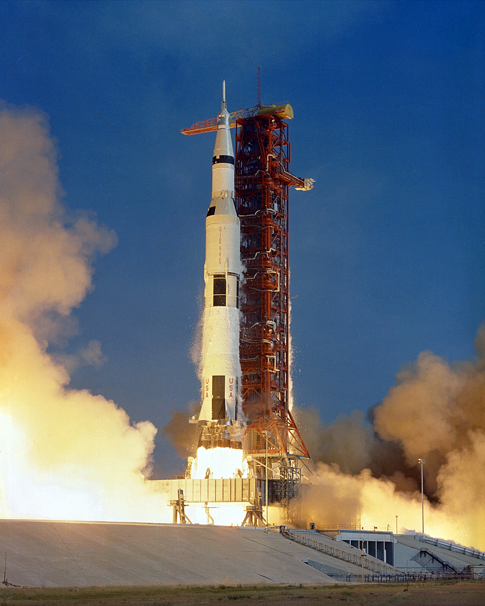
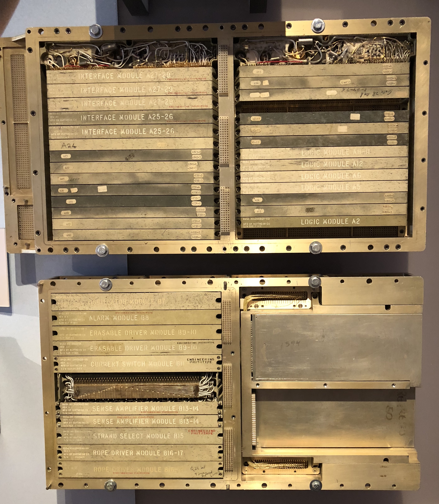
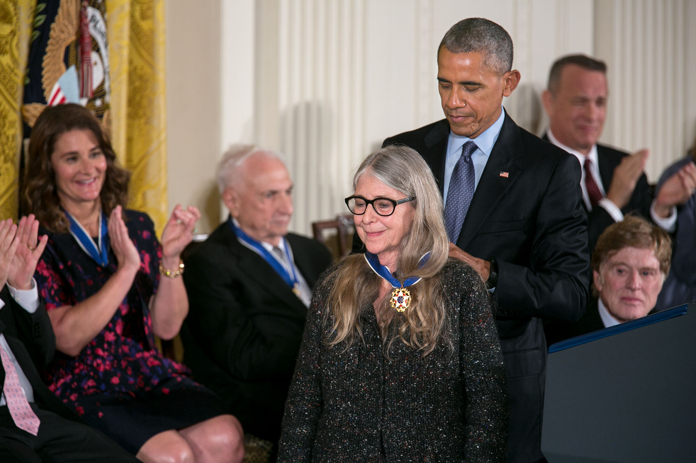

Quem foi Margaret Hamilton?
Margaret Heafield Hamilton nasceu em 17 de agosto de 1936, em Paoli, Indiana (EUA). Matemática e cientista da computação, ela é amplamente reconhecida como uma das pioneiras do desenvolvimento de software — tendo sido ela própria a responsável por cunhar o termo "engenharia de software" para descrever sua área de trabalho em uma época em que programar computadores ainda não era considerado uma disciplina científica séria.
Formada em matemática pelo Earlham College em 1958, Hamilton planejava inicialmente obter um doutorado na Universidade de Michigan. No entanto, seu destino tomou outro rumo quando ela passou a trabalhar no MIT (Instituto de Tecnologia de Massachusetts), onde acabou se envolvendo com alguns dos projetos computacionais mais ambiciosos da história.

Margaret Hamilton no MIT, c. 1969.
Fonte: NASA / Domínio público
Do MIT à NASA
No início dos anos 1960, Hamilton começou a trabalhar no MIT Instrumentation Laboratory, onde contribuiu para o desenvolvimento do software de previsão meteorológica do projeto SAGE (Semi-Automatic Ground Environment) — um dos primeiros sistemas de defesa aérea computadorizados dos EUA. Essa experiência foi fundamental para o que viria a seguir.
Em 1965, a NASA selecionou o MIT para desenvolver o software de navegação, orientação e controle (GNC) das missões Apollo e Gemini. Hamilton tornou-se a diretora do projeto, liderando uma equipe responsável por criar o código que guiaria os astronautas até a Lua e os traria de volta com segurança.
O Software que foi à Lua
O software desenvolvido pela equipe de Hamilton precisava funcionar em um computador com capacidade ínfima pelo padrão atual — o Apollo Guidance Computer (AGC) tinha apenas 4 KB de memória RAM e 72 KB de armazenamento em memória de núcleo. Escrever código eficiente e confiável para um equipamento tão limitado, em uma missão onde qualquer erro poderia custar vidas, foi um desafio monumental.
Hamilton introduziu conceitos revolucionários no processo: priorização de tarefas em tempo real, detecção e recuperação de erros em voo, e tratamento de exceções de software — abordagens que se tornaram pilares da engenharia de software moderna.

A Crise da Apollo 11 — e o Software que Salvou a Missão
Em 20 de julho de 1969, durante os minutos finais da descida do módulo lunar da Apollo 11, os astronautas Neil Armstrong e Buzz Aldrin depararam-se com uma série de alarmes inesperados: o código 1202. O computador de bordo estava sendo sobrecarregado por tarefas desnecessárias provenientes de um radar que havia ficado ligado por engano.
Graças ao mecanismo de priorização de tarefas que Hamilton havia projetado, o AGC reconheceu que estava sobrecarregado e descartou automaticamente as tarefas menos críticas, mantendo as funções essenciais de navegação em funcionamento. A pousar continuou. Doze minutos depois, o módulo Eagle tocou o solo lunar.
Sem esse mecanismo, a missão provavelmente teria sido abortada. A previsão de Hamilton de que erros imprevistos aconteceriam — e sua insistência em construir o software para lidar com eles — salvou a maior façanha tecnológica do século XX.
Linha do Tempo
- 1936 Nasce em Paoli, Indiana, EUA.
- 1958 Formada em matemática pelo Earlham College.
- 1961 Começa a trabalhar no MIT (projeto SAGE).
- 1965 Assume a liderança do software de navegação Apollo/Gemini.
- 1969 Apollo 11 pousa na Lua; seu software previne um aborto de missão.
- 1976 Co-funda a empresa Higher Order Software (HOS).
- 1986 Funda a Hamilton Technologies, Inc.
- 2003 Recebe a NASA Exceptional Space Act Award, com o maior prêmio em dinheiro da história da NASA.
- 2016 Recebe a Medalha Presidencial da Liberdade, a mais alta honraria civil dos EUA.
Galeria
Registros históricos do programa espacial Apollo e de Margaret Hamilton, cujo trabalho foi essencial para uma das maiores conquistas da humanidade.
Hamilton ao lado dos códigos-fonte impressos do software Apollo — uma pilha que lhe chegava à cintura. NASA / MIT, c. 1969. Domínio público.

Buzz Aldrin na superfície da Lua, Apollo 11, julho de 1969. O pouso foi possível graças ao software de Hamilton. Foto: NASA / Domínio público.

Apollo Guidance Computer (AGC), o computador programado pela equipe de Hamilton. Hoje exposto no Computer History Museum. Foto: Wikimedia Commons / CC BY-SA 2.0.

O presidente Barack Obama confere a Hamilton a Medalha Presidencial da Liberdade, a mais alta honraria civil dos EUA, em novembro de 2016. Foto: Pete Souza / Casa Branca / Domínio público.
Referências
- NASA. Margaret Hamilton, Apollo Software Engineer, Awarded Presidential Medal of Freedom. Disponível em: nasa.gov. Acesso em: maio 2025.
- MIT News. Margaret Hamilton's Apollo Code. Disponível em: news.mit.edu. Acesso em: maio 2025.
- Wikimedia Commons. Fotografias de domínio público relacionadas às missões Apollo e a Margaret Hamilton. Disponível em: commons.wikimedia.org.
- Computer History Museum. Margaret Hamilton. Disponível em: computerhistory.org. Acesso em: maio 2025.